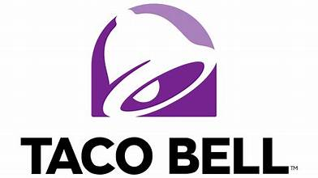
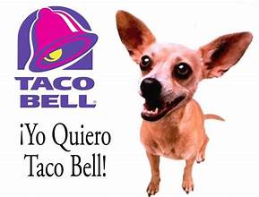

Websites Used:
These websites allowed me to get the precise information needed to prove how great Taco Bell can be. They provide evidence on how some items on the menu can be put into a balanced diet. If used right, you can maintain a healthy diet that includes Taco Bell items. Other websites shows interesting and fun facts about Taco Bell history that not the average person knows. Some go from how Taco Bell used to sell other stuff other than just tacos to how their mascot popularized their franchise. Its so fun to learn new facts everyday and even more fun that they are about the best fast food restaurant!
A little bit about Gidget:
Gidget is the mascot for Taco Bell, she created the quote: "Yo Quiero Taco Bell" that everyone knows and loves to this day. She quickly became famous in an advertisement and brought the attention to Taco Bell. This is not the only time she appears though as she is also in a movie called Legally blonde 2. Sadly in 2009 she passed away at the age of 15 due to a stroke. She lived in California where she is also cremated while her owner still holds her ashes. I send my regards to Gidget and hope shes happy in heaven. R.I.P Gidget
